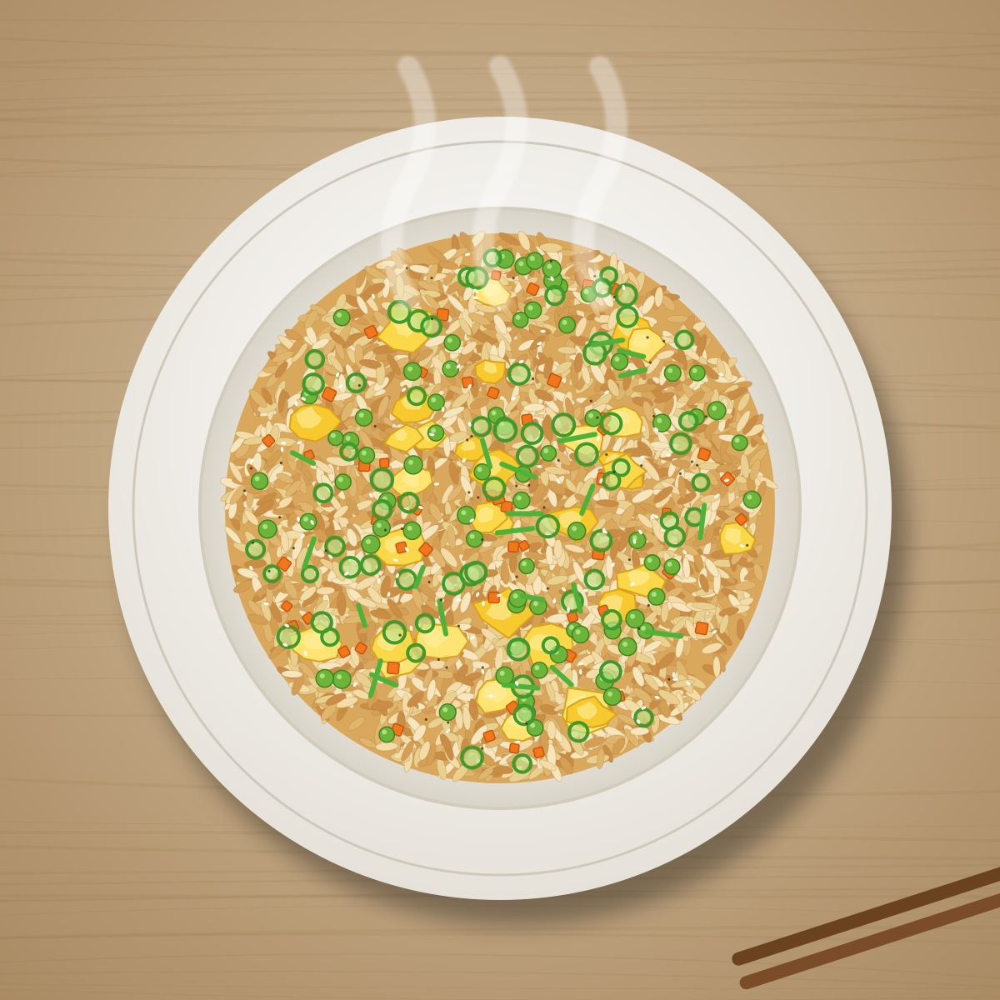

Classic Egg & Vegetable Fried Rice

Description
This classic takeout-style fried rice transforms leftover grains into a savory, satisfying meal in just 15 minutes. Fluffy rice is stir-fried over high heat with tender vegetables, scrambled eggs, fragrant garlic, and a rich soy-sesame glaze for effortless flavor in every bite.
Ingredients
- Cooked rice: 3 cups cold, day-old jasmine or long-grain white rice (broken up with your hands so there are no clumps)
- Eggs: 2 large eggs (lightly beaten)
- Vegetables: 1 cup frozen peas and diced carrots (thawed)
- Aromatics: 3 cloves garlic (minced) and 3 green onions (thinly sliced, white and green parts separated)
- Cooking oil: 2 tablespoons neutral oil (such as vegetable, canola, or avocado oil), divided
- Soy sauce: 2 to 3 tablespoons low-sodium soy sauce (adjust to taste)
- Oyster sauce: 1 tablespoon oyster sauce (optional, for extra savory depth)
- Sesame oil: 1 teaspoon toasted sesame oil
- Seasoning: 1/4 teaspoon white or black pepper
Steps
- Heat 1 tablespoon of neutral oil in a large wok or skillet over medium-high heat. Pour in the beaten eggs and scramble gently until just set, then transfer them to a clean plate.
- Add the remaining 1 tablespoon of oil to the pan. Toss in the minced garlic, white parts of the green onions, and the peas and carrots. Stir-fry for 1 to 2 minutes until fragrant and tender.
- Turn the heat up to high and add the cold rice to the pan. Spread it out and press it down gently, letting it cook undisturbed for 1 minute to get slightly crispy before tossing.
- Drizzle the soy sauce, oyster sauce, and pepper evenly over the rice. Toss continuously for 2 minutes until every grain is coated and heated through.
- Return the scrambled eggs to the pan, breaking them into bite-sized pieces. Remove from heat, stir in the toasted sesame oil and the green parts of the scallions, and serve immediately.
Home